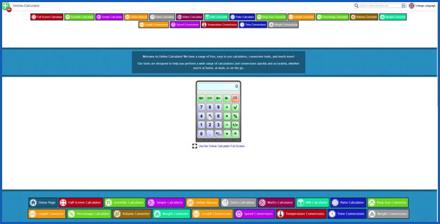
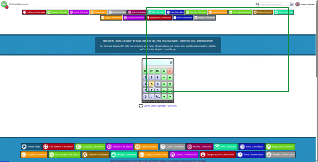
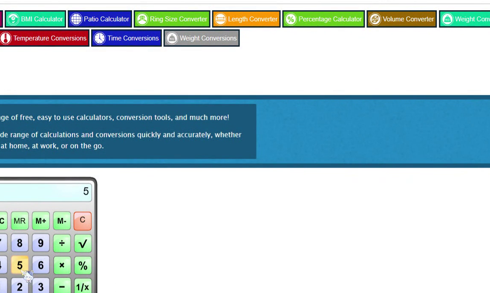
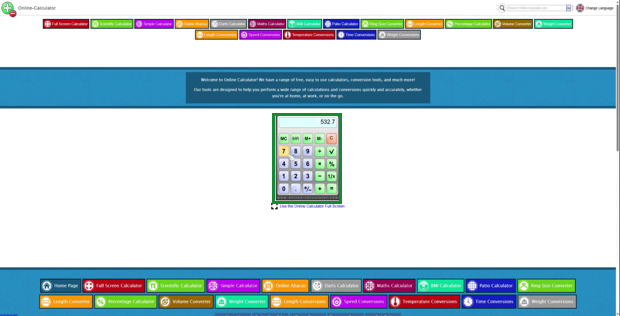
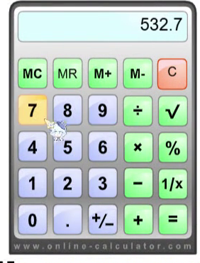
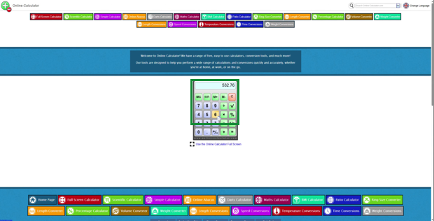
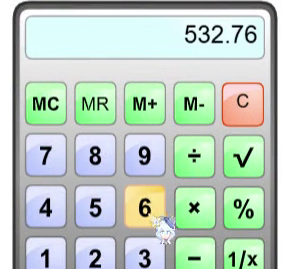
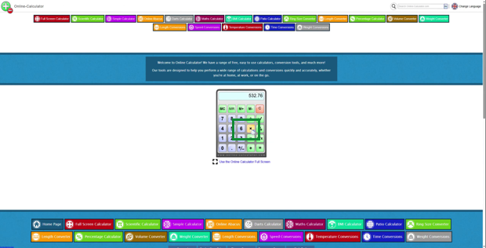
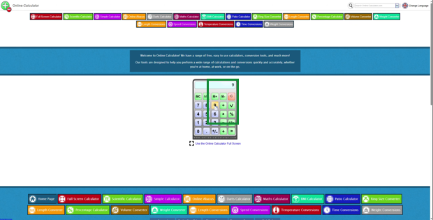
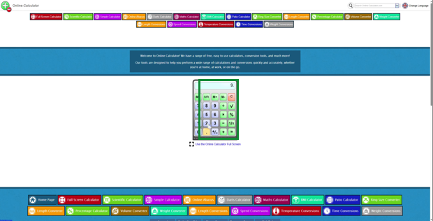

screenshot_0 · full
[2560, 1304] → [2560, 1304] · 保留像素 100.0% · 场景 0
原图与选区



坐标：[0, 0, 2560, 1304] · 原因：first_screenshot
算法版本：experimental_theme_aware_per_step_v2。仅用于预览，生成流程未修改。
返回任务总览 · 查看全部步骤拼图 · 查看算法判断 JSON
左侧为原图预览和选区（绿色：裁剪；蓝色：保留整图），右侧为此算法的输出预览；实验版尚未用于生成。点击图片查看原尺寸；预览自动缩放。像素减少比例不等于 token 减少比例。
[2560, 1304] → [2560, 1304] · 保留像素 100.0% · 场景 0
原图与选区

坐标：[0, 0, 2560, 1304] · 原因：first_screenshot
[2560, 1304] → [1150, 687] · 保留像素 23.7% · 场景 0
原图与选区

算法输出预览

坐标：[1175, 54, 2325, 741] · 原因：localized_change
[2560, 1304] → [233, 319] · 保留像素 2.2% · 场景 0
坐标：[1175, 468, 1408, 787] · 原因：localized_change
[2560, 1304] → [233, 319] · 保留像素 2.2% · 场景 0
坐标：[1175, 468, 1408, 787] · 原因：localized_change
[2560, 1304] → [232, 371] · 保留像素 2.6% · 场景 0
坐标：[1175, 468, 1407, 839] · 原因：localized_change
[2560, 1304] → [282, 371] · 保留像素 3.1% · 场景 0
原图与选区

算法输出预览

坐标：[1126, 468, 1408, 839] · 原因：localized_change
[2560, 1304] → [282, 269] · 保留像素 2.3% · 场景 0
原图与选区

算法输出预览

坐标：[1126, 468, 1408, 737] · 原因：localized_change
[2560, 1304] → [143, 110] · 保留像素 0.5% · 场景 0
原图与选区

坐标：[1225, 627, 1368, 737] · 原因：localized_change
[2560, 1304] → [183, 267] · 保留像素 1.5% · 场景 0
原图与选区

坐标：[1225, 468, 1408, 735] · 原因：localized_change
[2560, 1304] → [233, 357] · 保留像素 2.5% · 场景 0
原图与选区

坐标：[1175, 468, 1408, 825] · 原因：localized_change
[2560, 1304] → [232, 356] · 保留像素 2.5% · 场景 0
坐标：[1175, 468, 1407, 824] · 原因：localized_change
[2560, 1304] → [248, 369] · 保留像素 2.7% · 场景 0
坐标：[1175, 468, 1423, 837] · 原因：localized_change